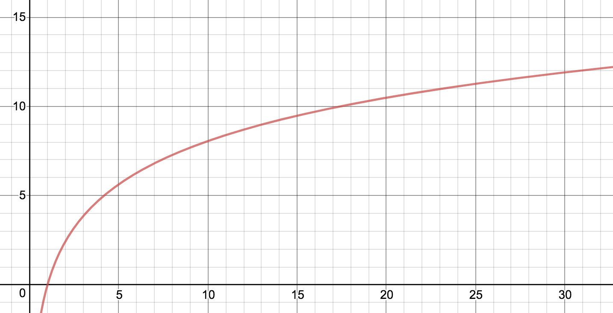

It turns out that to get to other planets you need to go really fast as well. In fact the distances between planets are not measured in km.
Rocket Equation
The change in velocity that you can achieve is the product of the exhaust velocity and the natural logarithm of the mass ratio, which is the final mass divided by the initial mass. Here it is in math gobbledygook.
$$\Delta v = V_e \ln (M_f / M_i)$$
Rocket people will refer to this as delta-v where delta means change and v means v, I mean velocity.
The logarithm function causes the relationship to have this shaped curve which indicates that there’s a limit to how fast you can go since speed is on the vertical axis.

Speed (in kilometers per second) versus the mass ratio for exhaust velocity of 3.5km/s
If your rocket is 20 times as heavy when it’s full as it is when it’s empty and it’s got good engines then it’ll be able to accelerate to about 10km/s or about 36000 km/h.
Getting a higher mass ratio means trying to get your rocket as light as possible when its empty and still strong enough to go through the atmosphere at thousands of kilometers an hour is what keeps rocket scientists up all night.
These are the speeds that are necessary to go to other planets in the solar system. The little triangles mean you can use the atmosphere to slow down instead of your rocket engines (aerobraking).
Earth’s delta-v is a bit higher than it is theoretically because whenever a rocket is going straight up none of that speed goes into getting to orbital speed. Typically a rocket will lose about 1km/s going upward.
Mars actually looks like its very easy to get to if we are good at aerobraking. But it’s very hard to aerobrake on Mars. Mars has a very thin atmosphere and very large mountains to crash into if you make a mistake. People are trying though.